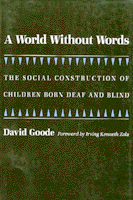

<body bgcolor="#FFFFFF" text="#000000" link="#0000FF" vlink="#CC0000" alink="#CC0000"><center><hr width="350" size="1" align="center" noshade>Exploring communication with children born deaf-blind<hr width="350" size="1" align="center" noshade><p><a href="https://cdcshoppingcart.uchicago.edu/Cart/ChicagoBook.aspx?ISBN=9781566392150&&PRESS=temple" target="_top">Buy this book!</a> | <a href="https://cdcshoppingcart.uchicago.edu/Cart/Cart.aspx?PRESS=temple" target="_top">View Cart</a> | <a href="https://cdcshoppingcart.uchicago.edu/Cart/Cart.aspx?PRESS=temple" target="_top">Check Out</a></p><p></p></center><!--none//--><h1>A World without Words</h1>
<H2>The Social Construction of Children Born Deaf and Blind</H2>
<h3>David Goode, foreword by Irving Kenneth Zola</h3>
<P>cloth 1-56639-215-2 $59.95, Jul 94, <FONT COLOR=#990033>Out of Print</FONT>
<br>paper 1-56639-216-0 $36.95, Jun 94, <FONT COLOR=#990033>Available</FONT>
<br>Electronic Book 1-43990-579-7 $36.95 <FONT COLOR=#990033>Out of Print</FONT>
<BR> 336 pp
5.5x8.25
1&nbsp;table 1&nbsp;figure
</P><h3 align="center"><P><font color="#996633">Co-winner of the John Horton Cooley Book Award, Society for the Study of Symbolic Interaction,
1995</font></P>
</H3>
<BLOCKQUOTE><I>"David Goode's work is unique and his thinking original and deep. It is some of the best in the sociology of disability."</I>
<br>&#151<b>Robert Bogdan</b>, Syracuse University<I></I></BLOCKQUOTE>
<p>During the Rubella Syndrome epidemic of the 1960s, many children were born deaf, blind, and mentally disabled. David Goode has devoted his life and career to understanding such people's world, a world without words, but not, the author confirms, one without communication. This book is the result of his studies of two children with congenital deaf-blindness and mental retardation.
<p>Goode spent countless hours observing, teaching, and playing with Christina, who had been institutionalized since age six, and Bianca, who remained in the care of her parents. He also observed the girls' parents, school, and medical environments, exploring the unique communication practices&#151sometimes so subtle they are imperceptible to outsiders&#151that family and health care workers create to facilitate innumerable every day situations. <I>A World Without Words</I> presents moving and convincing evidence that human beings both with and without formal language can understand and communicate with each other in many ways.
<p>Through various experiments in such unconventional forms of communication as playing guitar, mimicking, and body movements like jumping, swinging, and rocking, Goode established an understanding of these children on their own terms. He discovered a spectrum of non-formal language through which these children create their own set of symbols within their own reality, and accommodate and maximize the sensory resources they do have. Ultimately, he suggests, it is impractical to attempt to interpret these children's behaviors using ideas about normal behavior of the hearing and seeing world.
<BR>&nbsp;<h2>Excerpt</h2><P>Excerpt available at <a href="http://www.temple.edu/tempress">www.temple.edu/tempress</a></p>
<BR>&nbsp;<h2>Contents</h2><P>
<p>Foreword &#150 Irving Kenneth Zola
<br>Acknowledgments
<br>1. Introduction
<br>2. A World Without Words
<br>3. On Understanding Without Words
<br>4. Reflections on the Possibility of Understanding Without Formal Language
<br>5. Construction and Use of Data in Social Science Research
<br>6. Kids, Culture, and Innocents
<br>7. Conclusions
<br>Appendix: Ascertaining Choice with Alingual, Deaf-Blind, and Retarded Clients
<br>Notes
<br>References
<br>Index
</P><BR>&nbsp;<H2>About the Author(s)</H2>
<P><B>David Goode</B> is the Coordinator of the Program in Developmental Disabilities and teaches sociology at the College of Staten Island, City University of New York.</P>
<BR><H2>Subject Categories</H2>
<p><A HREF="/tempress/sociology.html" TARGET="_top">Sociology</a>
<BR><A HREF="/tempress/disability.html" TARGET="_top">Disability Studies</a>
</p>
<BR><h2 class="inpageheading">In the series</H2>
<P><I><a href="http://www.temple.edu/tempress/health_society.html" onMouseOver="window.status='Click for other books in this series!'; return true;" onMouseOut="window.status=''; return true;" target="_top">Health, Society, and Policy</a></i>, edited by Sheryl Ruzek and Irving Kenneth Zola.
</p><p>No longer active.<p><i>Health, Society and Policy</i>, edited by Sheryl Ruzek and Irving Kenneth Zola, takes a critical stance with regard to health policy and medical practice, ranging broadly in subject matter. Backlist titles include books on the legal and professional status of midwifery, the experience and regulation of kidney transplants, the evolution of federal law on architectural access, and a political/ethical argument for making the community responsible for universal access to health care.</p>
<p align="center"><a href="https://cdcshoppingcart.uchicago.edu/Cart/ChicagoBook.aspx?ISBN=9781566392150&&PRESS=temple" target="_top">Buy this book!</a> | <a href="https://cdcshoppingcart.uchicago.edu/Cart/Cart.aspx?PRESS=temple" target="_top">View Cart</a> | <a href="https://cdcshoppingcart.uchicago.edu/Cart/Cart.aspx?PRESS=temple" target="_top">Check Out</a></p><p><font face="Arial" size="1"><a href="copyright.html" onMouseOver="window.status='Web Copyright Policy';return true;" onMouseOut="window.status=''" title="Web Copyright Policy">&copy;</a> 2015 <a href="http://www.temple.edu" target="new" onMouseOver="window.status='Link to Temple University home page';return true;" onMouseOut="window.status=''" title="Link to Temple University home page">Temple University</a>. All Rights Reserved. http://www.temple.edu/tempress/titles/1022_reg.html</font></p>